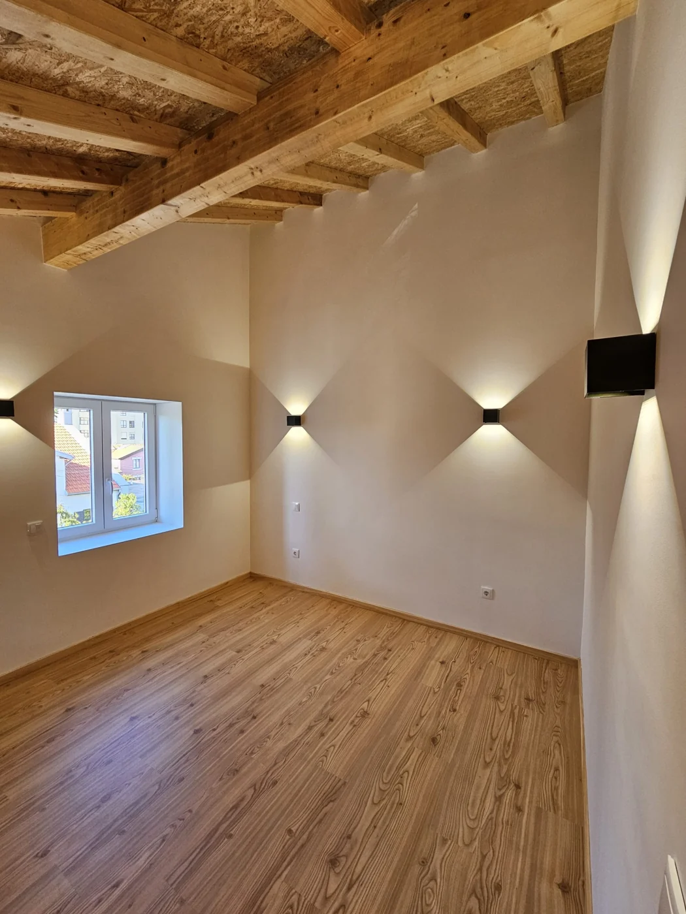
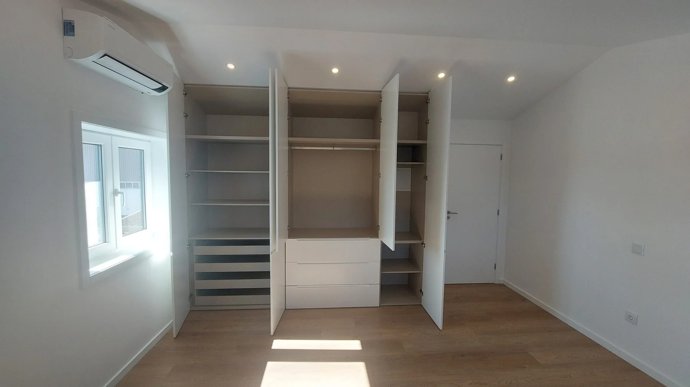
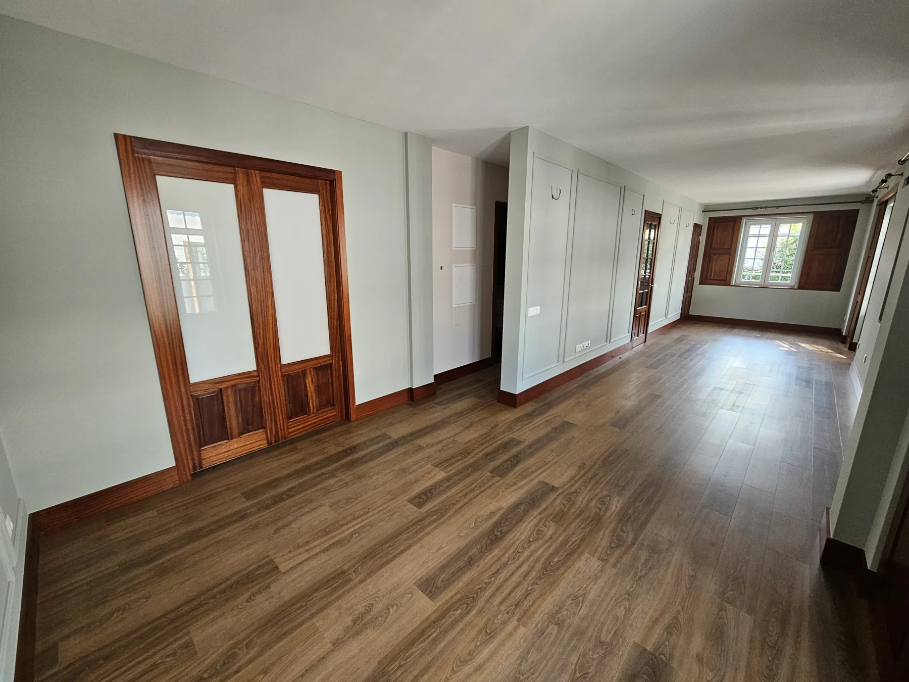

Trabalhos SOECO
Um olhar sobre
a carpintaria no espaço.
Três trabalhos apresentados pela empresa. Explore as imagens e encontre a aplicação que se aproxima do seu projeto.
Obra 11 · Carpintaria de interior
Madeira à vista
As imagens mostram frentes de armário, elementos em madeira à vista e a relação da carpintaria com a geometria do interior. A galeria permite observar o conjunto e diferentes pormenores do espaço.
Conhecer armários e revestimentos
Vista do interior e elementos em madeira
Obra 10 · Roupeiros
Arrumação por dentro
As portas abertas mostram a organização interior do roupeiro; as vistas com as portas fechadas mostram a integração das frentes no espaço. Dois olhares sobre a mesma aplicação.
Conhecer o serviço de roupeiros
Roupeiro aberto: prateleiras, varões e gavetas
Obra 9 · Carpintaria de interior
Portas e continuidade
As fotografias permitem observar portas, vãos e zonas de circulação. O percurso entre espaços dá contexto aos elementos de carpintaria que aparecem em cada imagem.
Conhecer portas e outras soluções
Vista da divisão e dos vãos interiores
Explore estas referências e indique o número da obra e o detalhe que lhe interessa quando falar com a equipa.